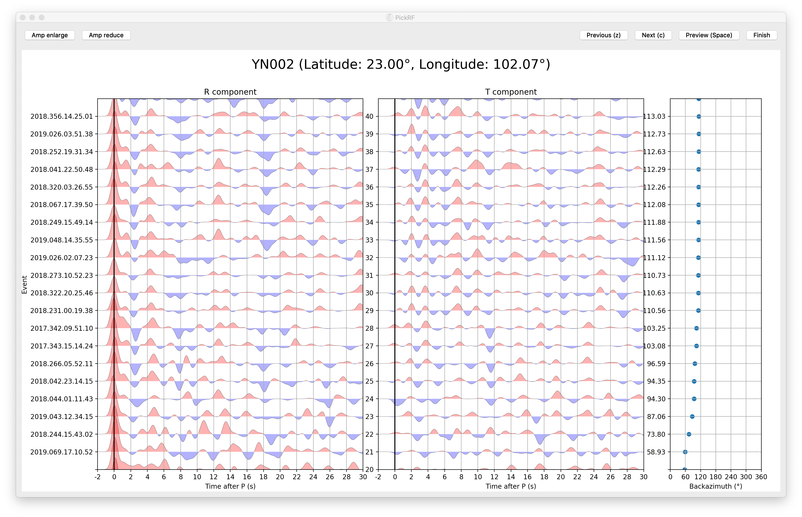
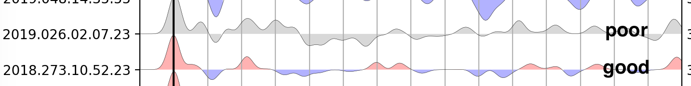

Virtual check PRFs with an user interface¶
Open the user interface¶
Following previous steps, PRFs have been calculated and save to SAC files in a folder named as the station name.
net.sta
├── 2018.229.15.35.02_P_R.sac
├── 2018.229.15.35.02_P_T.sac
├── 2018.229.22.06.55_P_R.sac
├── 2018.229.22.06.55_P_T.sac
│......
For example, PRFs were saved in folder net.sta. the file name of the PRF must be in %Y.%j.%H.%M.%S_P_[RT].sac. Now input following command to open the UI to browse the PRFs and reject poor PRFs.
$ pickrf /path/to/net.sta
The window will open as following image. Each page will display 20 PRFs. You can press z and c hotkey or click previous and next button for turning pages.

Operations¶
Directly click PRFs on the interface to set up them to ‘poor’ PRFs. The PRFs would turn gray when you click a PRF. If you click again, it will be restored to a ‘good’ PRF.

When you have selected all PRFs, please click finish button to delete all ‘poor’ PRFs. Then a list file named as net.stafinallist.dat will be generated automatically in the folder, which include following columns
Event name: the event name with format as
%Y.%j.%H.%M.%S.Phase: the phase name (same as that in file name).
Event latitude
Event longitude
Event depth
Epicenter distance in degree
Back-azimuth
Ray-parameters in s/km
Magnitude
Gaussian factor
This list file is very important for derived method such as H-k stacking and CCP stacking.
Other functions¶
enlarge and reduce visual amplitudes of the waveforms¶
Buttons of Amp enlarge and Amp reduce are available to control the visual amplitudes.
Preview all PRFs¶
the space hotkey and preview button provide a function to plot all ‘good’ PRFs. Use ctrl+s on Linux/Windows and cmd+s on MacOS to save this figure as a PDF file.
Keymap¶
| Key | Function |
|---|---|
z |
Page up |
c |
Page down |
space |
Preview all good PRFs |
ctrl+s or cmd+s |
Save preview |